# install.packages("carData")
# install.packages("corrplot")
# install.packages("car")
# install.packages("modelr")
# install.packages("lmtest")
# install.packages("leaps")2 Лінійна регресія. Престиж професій
Курс: Математичне моделювання в R
Перевірити матеріали лекції!!!
Розділ про мультиколінеарність та вибір найкращої моделі.
Sys.setlocale("LC_CTYPE", "ukrainian")
options(warn = -1)
'Ukrainian_Ukraine.1251'
2.1 Dataset overview
У даному навчальному матеріалі використано класичний приклад даних з інформацією про престижність професій у Канаді 1971 року. Джерело: carData::Prestige.
library(carData)
data <- carData::Prestige
head(data)| education | income | women | prestige | census | type | |
|---|---|---|---|---|---|---|
| <dbl> | <int> | <dbl> | <dbl> | <int> | <fct> | |
| gov.administrators | 13.11 | 12351 | 11.16 | 68.8 | 1113 | prof |
| general.managers | 12.26 | 25879 | 4.02 | 69.1 | 1130 | prof |
| accountants | 12.77 | 9271 | 15.70 | 63.4 | 1171 | prof |
| purchasing.officers | 11.42 | 8865 | 9.11 | 56.8 | 1175 | prof |
| chemists | 14.62 | 8403 | 11.68 | 73.5 | 2111 | prof |
| physicists | 15.64 | 11030 | 5.13 | 77.6 | 2113 | prof |
Переглянемо структуру даних:
str(data)'data.frame': 102 obs. of 6 variables:
$ education: num 13.1 12.3 12.8 11.4 14.6 ...
$ income : int 12351 25879 9271 8865 8403 11030 8258 14163 11377 11023 ...
$ women : num 11.16 4.02 15.7 9.11 11.68 ...
$ prestige : num 68.8 69.1 63.4 56.8 73.5 77.6 72.6 78.1 73.1 68.8 ...
$ census : int 1113 1130 1171 1175 2111 2113 2133 2141 2143 2153 ...
$ type : Factor w/ 3 levels "bc","prof","wc": 2 2 2 2 2 2 2 2 2 2 ...Значення показників вибірки:
prestige– престиж професії за Pineo-Porter score, на основі дослідження середини 1960-х. It is target!!!education- середня кількість років освіти.income– середній дохід респондентів, дол.women– частка жінок у галузіcensus– канадський код професії.type– тип професії: bc, Blue Collar; prof, Professional, Managerial, and Technical; wc, White Collar.
Оглянемо описову статистику факторів:
summary(data) education income women prestige
Min. : 6.380 Min. : 611 Min. : 0.000 Min. :14.80
1st Qu.: 8.445 1st Qu.: 4106 1st Qu.: 3.592 1st Qu.:35.23
Median :10.540 Median : 5930 Median :13.600 Median :43.60
Mean :10.738 Mean : 6798 Mean :28.979 Mean :46.83
3rd Qu.:12.648 3rd Qu.: 8187 3rd Qu.:52.203 3rd Qu.:59.27
Max. :15.970 Max. :25879 Max. :97.510 Max. :87.20
census type
Min. :1113 bc :44
1st Qu.:3120 prof:31
Median :5135 wc :23
Mean :5402 NA's: 4
3rd Qu.:8312
Max. :9517 2.2 Train/Test split
Розділимо загальну вибірку на 2 частини: * тренувальна, 70% вибірки, для побудови регресії; * тестова, 30% вибірки, для перевірки точності моделі.
set.seed(10) #довільне число як точка "відправки" для генератора випадкових чисел
# Згенеруємо набір чисел від 1 до кількості спостережень у вибірці і відберемо випадквоим чином 70% із них
train_index <- sample(nrow(data), size = 0.7*nrow(data))
#Виведемо індекси (номери рядків) обраних для тренування даних
print(train_index) [1] 9 74 76 55 72 54 39 83 88 15 93 42 71 101 34 24 13 8 7
[20] 27 82 29 81 50 26 33 84 78 79 30 68 51 97 59 32 11 77 91
[39] 28 95 65 14 86 66 41 25 85 16 53 75 57 17 48 23 92 46 87
[58] 94 4 35 61 69 43 10 96 99 89 31 38 52 18#Запишемо по номерах відібраних рядків тренувальний набір даних
train_data <- data[train_index, ]
head(train_data)
#Всі інші значення, що не увійшли в тренувальну вибірку запишемо у тестову
test_data <- data[-train_index, ]
head(test_data)| education | income | women | prestige | census | type | |
|---|---|---|---|---|---|---|
| <dbl> | <int> | <dbl> | <dbl> | <int> | <fct> | |
| civil.engineers | 14.52 | 11377 | 1.03 | 73.1 | 2143 | prof |
| textile.weavers | 6.69 | 4443 | 31.36 | 33.3 | 8267 | bc |
| tool.die.makers | 10.09 | 8043 | 1.50 | 42.5 | 8311 | bc |
| insurance.agents | 11.60 | 8131 | 13.09 | 47.3 | 5171 | wc |
| slaughterers.2 | 7.64 | 5134 | 17.26 | 34.8 | 8215 | bc |
| service.station.attendant | 9.93 | 2370 | 3.69 | 23.3 | 5145 | bc |
| education | income | women | prestige | census | type | |
|---|---|---|---|---|---|---|
| <dbl> | <int> | <dbl> | <dbl> | <int> | <fct> | |
| gov.administrators | 13.11 | 12351 | 11.16 | 68.8 | 1113 | prof |
| general.managers | 12.26 | 25879 | 4.02 | 69.1 | 1130 | prof |
| accountants | 12.77 | 9271 | 15.70 | 63.4 | 1171 | prof |
| chemists | 14.62 | 8403 | 11.68 | 73.5 | 2111 | prof |
| physicists | 15.64 | 11030 | 5.13 | 77.6 | 2113 | prof |
| draughtsmen | 12.30 | 7059 | 7.83 | 60.0 | 2163 | prof |
2.3 Short EDA (Exploratory data analysis)
2.3.1 Correlation
Переглянемо наявність зв’язків між параметрами за допоомгою матриці попарних кореляцій. Дані на перетині рядків вказують на рівень кореляції між вибраними показниками.
Виключимо змінну type, оскільки вона не має числового представлення:
cor(train_data[ ,-6])| education | income | women | prestige | census | |
|---|---|---|---|---|---|
| education | 1.0000000 | 0.6243784 | 0.1507510 | 0.8448752 | -0.8212488 |
| income | 0.6243784 | 1.0000000 | -0.3910854 | 0.7425534 | -0.3037354 |
| women | 0.1507510 | -0.3910854 | 1.0000000 | 0.0227754 | -0.3431387 |
| prestige | 0.8448752 | 0.7425534 | 0.0227754 | 1.0000000 | -0.5968525 |
| census | -0.8212488 | -0.3037354 | -0.3431387 | -0.5968525 | 1.0000000 |
Lets view correlation matrix with corrplot() function:
suppressMessages(library(corrplot))
corrplot(cor(train_data[,-6]) , method = "number") 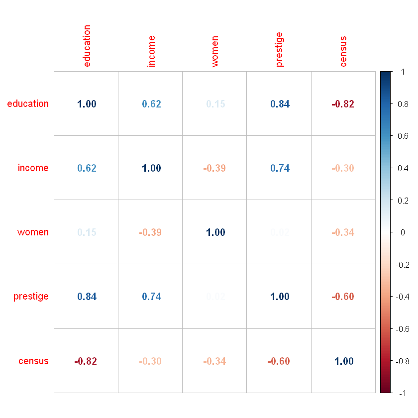
You can see hight correlation between education ~ prestige, education ~ census, prestige ~ income.
2.3.2 Visual analysis
Lets check data distribution of some variables
Target/Output variable prestige:
library(ggplot2)
ggplot(train_data, aes(prestige)) +
geom_histogram(bins = 25, alpha = 0.5, fill = 'blue', color='black') +
theme_bw()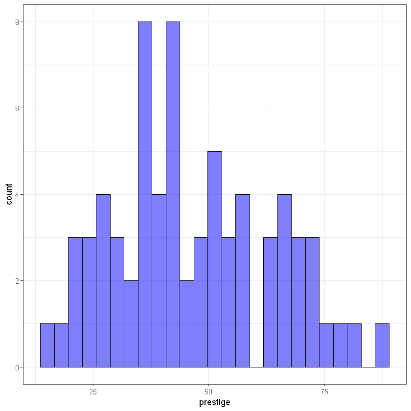
Input variable income:
#ggplot(train_data, aes(log(income))) +
ggplot(train_data, aes(income)) +
geom_histogram(bins = 25, alpha = 0.5, fill = 'blue', color='black') +
theme_bw()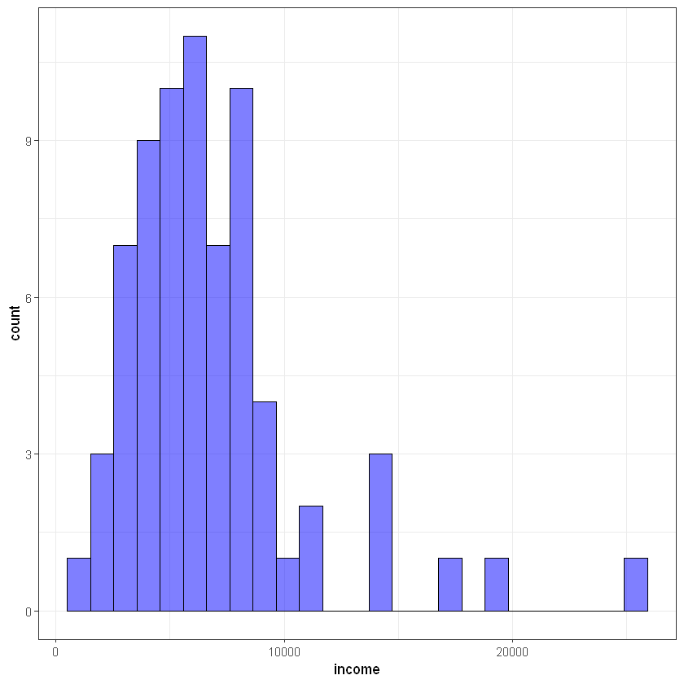
Input variable women:
#ggplot(train_data, aes(log(women))) +
ggplot(train_data, aes(women)) +
geom_histogram(bins = 25, alpha = 0.5, fill = 'blue', color='black') +
theme_bw()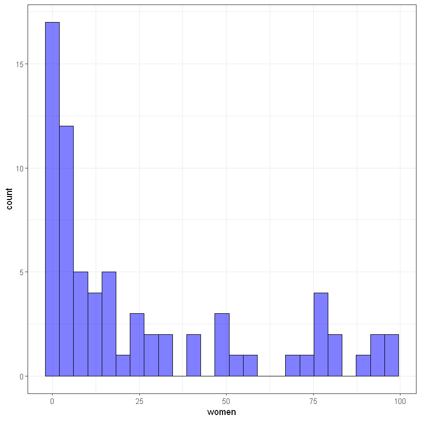
2.4 Model building
Функція lm() використовується для побудови лінійної регресії.
Syntax: lm(formula, data = train_data)
formula дозволяє вказати на залежність між вхідними та вихідним параметром. У даному випадку prestige - залежна змінна (Y), а усі, що після знаку ~ - незалежні (X).
lm_mod <- lm(formula = prestige ~ income + education, data = train_data)Для детальнішого опису параметрів побудованої моделі варто скористатися функцією summary():
summary(lm_mod)
Call:
lm(formula = prestige ~ income + education, data = train_data)
Residuals:
Min 1Q Median 3Q Max
-18.2951 -4.7988 0.1218 5.1932 17.1181
Coefficients:
Estimate Std. Error t value Pr(>|t|)
(Intercept) -5.9237106 3.9637472 -1.494 0.14
income 0.0014932 0.0003017 4.949 5.18e-06 ***
education 3.9135175 0.4460247 8.774 8.64e-13 ***
---
Signif. codes: 0 '***' 0.001 '**' 0.01 '*' 0.05 '.' 0.1 ' ' 1
Residual standard error: 8.035 on 68 degrees of freedom
Multiple R-squared: 0.7896, Adjusted R-squared: 0.7834
F-statistic: 127.6 on 2 and 68 DF, p-value: < 2.2e-162.4.1 Demo task: generating final formula for regression
Спробуємо створити рядковий вигляд для побудованої регресії (шляхом звичайного “склеювання” рядків). Це завдання для закріплення знань з алгоритмічного програмування в R.
lm_mod$coefficients # coefficients of the model- (Intercept)
- -5.92371064968481
- income
- 0.00149322824686838
- education
- 3.91351754603805
getLmFormula <- function(lm_model) {
str_formula <- paste(lm_model$terms[[2]], " = ", sep="")
str_formula <- paste(str_formula, + round(lm_model$coefficients[1], 4), sep=" ")
for(i in 2:length(lm_mod$coefficients)) {
znak <- "+"
if(lm_model$coefficients[i] < 0)
znak <- "-"
str_formula <- paste(str_formula, " ", znak, " ", round(lm_mod$coefficients[i], 4), "*", names(lm_mod$coefficients)[i] ,sep = "")
}
return(str_formula)
}Тоді формулу можна отримати наступним чином:
str_formula <- getLmFormula(lm_mod)
print(str_formula)[1] "prestige = -5.9237 + 0.0015*income + 3.9135*education"END OF DEMO TASK
One more way to preview model info is using package broom and function tidy():
#install.packages("broom")
library(broom)
lm_mod_view <- tidy(lm_mod)
lm_mod_view| term | estimate | std.error | statistic | p.value |
|---|---|---|---|---|
| <chr> | <dbl> | <dbl> | <dbl> | <dbl> |
| (Intercept) | -5.923710650 | 3.9637471616 | -1.494472 | 1.396785e-01 |
| income | 0.001493228 | 0.0003017277 | 4.948927 | 5.183124e-06 |
| education | 3.913517546 | 0.4460246832 | 8.774217 | 8.636723e-13 |
2.4.2 Зміна форми залежності
Спробуємо змінити форму залежності і побудуємо модель на основі трансформованих показників. Скористаємося логарифмуванням незалежних змінних:
lm_mod2 <- lm(formula = prestige ~ log(income) + log(education), data = train_data)
summary(lm_mod2)
Call:
lm(formula = prestige ~ log(income) + log(education), data = train_data)
Residuals:
Min 1Q Median 3Q Max
-16.6827 -6.0052 0.3465 4.1241 17.4622
Coefficients:
Estimate Std. Error t value Pr(>|t|)
(Intercept) -165.835 14.142 -11.727 < 2e-16 ***
log(income) 14.016 1.923 7.290 4.25e-10 ***
log(education) 38.615 4.094 9.433 5.62e-14 ***
---
Signif. codes: 0 '***' 0.001 '**' 0.01 '*' 0.05 '.' 0.1 ' ' 1
Residual standard error: 7.496 on 68 degrees of freedom
Multiple R-squared: 0.8169, Adjusted R-squared: 0.8115
F-statistic: 151.7 on 2 and 68 DF, p-value: < 2.2e-16\(R^2\) зріс. Тобто зміна форми залежності може впливати на якість моделі.
Alert! Its depends on our seed parameter, because of changing train and test sets.
Повернемося до попередньої моделі:
lm_mod <- lm(formula = prestige ~ income + education, data = train_data)Переглянемо графік реальних даних, прогнозованих та похибок. Для початку створимо тимчасовий data.frame для генерації графіка зі значень
- фактори;
- реальні значення;
- прогнозовані значення;
- похибки.
Увага! Даний графік будуватимемо на тренувальній вибірці!
# data frame for storing data
tmp_data <- data.frame(education = train_data$education,
income = train_data$income,
prestige = train_data$prestige,
predicted = lm_mod$fitted.values,
residuals = lm_mod$residuals) Переглянемо залежності між параметрами моделі:
# prestige vs education
ggplot(tmp_data, aes(x = education, y = prestige)) +
geom_segment(aes(xend = education, yend = predicted), alpha = .2) +
geom_point(aes(), color = 'blue') +
#scale_color_gradient2(low = "blue", mid = "white", high = "red") +
#guides(color = FALSE) +
geom_point(aes(y = predicted), shape = 2) +
theme_bw()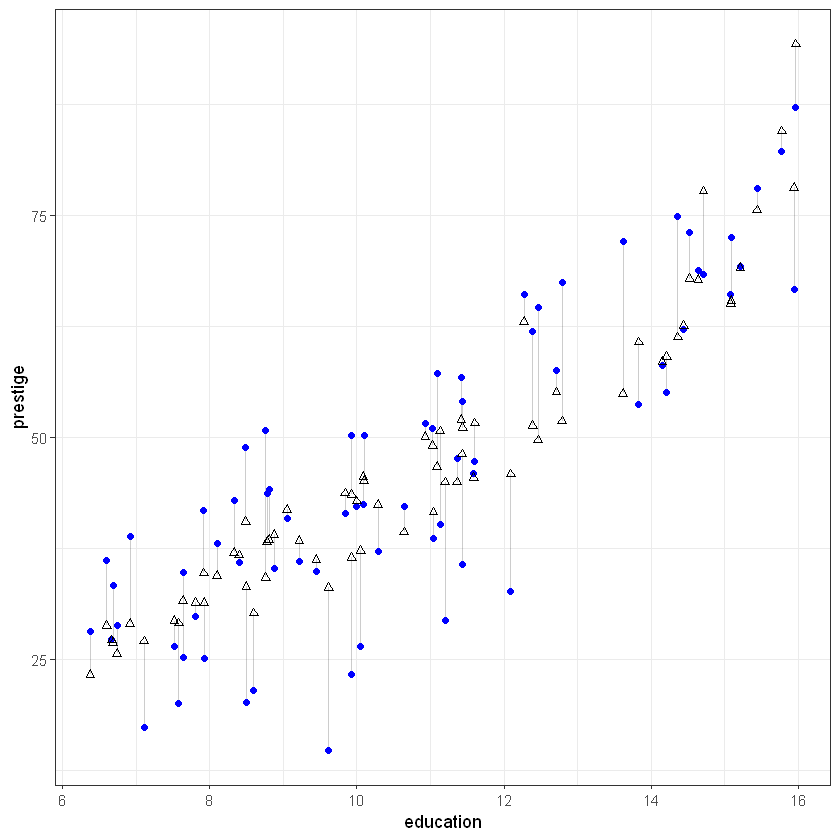
# prestige vs income
ggplot(tmp_data, aes(x = income, y = prestige)) +
geom_segment(aes(xend = income, yend = predicted), alpha = .2) +
geom_point(aes(color = residuals)) +
scale_color_gradient2(low = "blue", mid = "white", high = "red") +
guides(color = FALSE) +
geom_point(aes(y = predicted), shape = 2) +
theme_bw()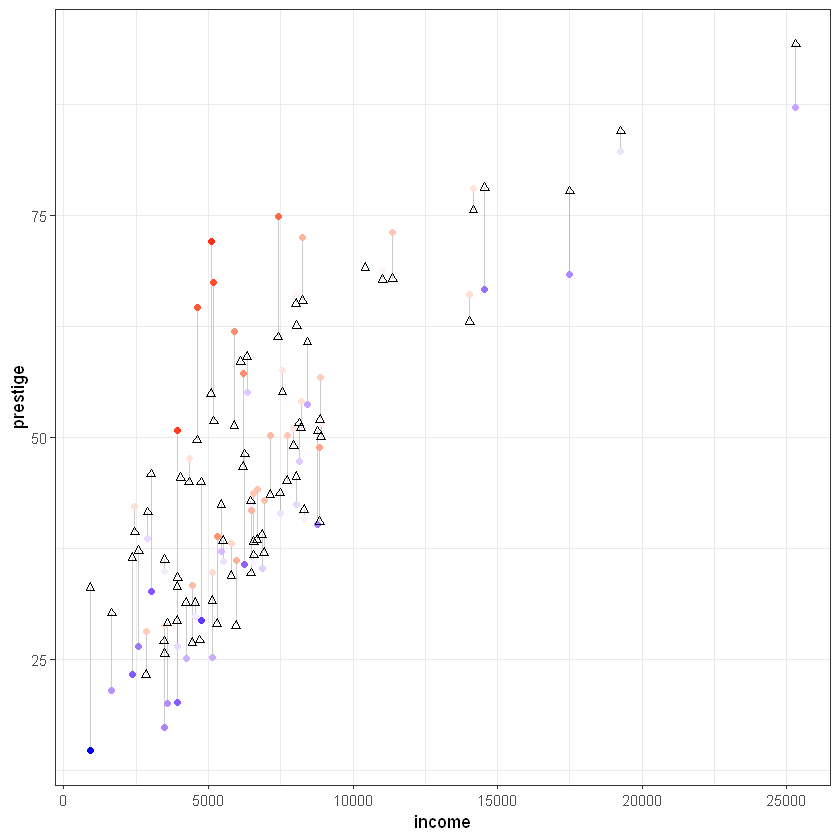
2.5 Prediction on test data and accuracy
Здійснимо прогноз за допомогою функції predict().
suppressMessages(library(dplyr))
test_predicted <- predict(lm_mod, test_data)
summary(test_predicted)
as.data.frame(sort(test_predicted) %>% head()) Min. 1st Qu. Median Mean 3rd Qu. Max.
25.94 33.43 43.74 45.96 56.82 80.70 | sort(test_predicted) %>% head() | |
|---|---|
| <dbl> | |
| canners | 25.93679 |
| farmers | 26.28458 |
| launderers | 27.24206 |
| cooks | 29.01981 |
| bakers | 29.85428 |
| babysitters | 32.01053 |
MSE (Mean Squared Error) – середньоквадратичне відхилення; середнє значення квадратів відхилень прогнозованих даних від реальних.
mse <- mean((test_data$prestige - test_predicted)^2)
mse
55.2458474568378
MAPE. MAPE (Mean Absolute Percentage Error) – середнє абсолютне відхилення прогнозованого показника від реального:
mape <- mean(abs(test_data$prestige - test_predicted)/test_data$prestige)
mape
0.134424776204161
Обчислимо метрики моделі за допомогою пакету modelr та функцій з нього:
suppressMessages(library(modelr))
data.frame(
R2 = rsquare(lm_mod, data = test_data),
MSE = mse(lm_mod, data = test_data),
RMSE = rmse(lm_mod, data = test_data),
MAE = mae(lm_mod, data = test_data),
MAPE = mape(lm_mod, data = test_data)
)| R2 | MSE | RMSE | MAE | MAPE |
|---|---|---|---|---|
| <dbl> | <dbl> | <dbl> | <dbl> | <dbl> |
| 0.8219865 | 55.24585 | 7.432755 | 6.139407 | 0.1344248 |
Mae - Mean Absolute Error. Rmse - Root mean squared error. Детальніше: https://medium.com/human-in-a-machine-world/mae-and-rmse-which-metric-is-better-e60ac3bde13d.
2.5.1 Перевірка на мультиколінераність
Зафіксуємо значення R^2 для моделі у деякій змінній:
r_sq = rsquare(lm_mod, data = test_data)
r_sq
0.821986517080715
suppressMessages(library(car))vif(lm_mod)- income
- 1.63893675540857
- education
- 1.63893675540857
Як видно вище тут мультиколінеарність відсутня.
Введемо в модель додатковий показник, що буде явно залежати від одного з факторів:
#lm_mod2 <- lm(formula = prestige ~ income + education + income_2, data = train_data)
#summary(lm_mod2)
#rsquare(lm_mod2, data = train_data)#r_sq2 <- rsquare(lm_mod2, data = test_data)
#r_sq
#r_sq2VIF-тест для моделі із корельованими змінними:
#vif(lm_mod2)The best way is to exclude the biggest and rebuild model in this case.
2.5.2 Extending model
Додамо до моделі категоріальний параметр type. Переглянемо можливі варіанти значень:
unique(train_data$type)- prof
- bc
- wc
- <NA>
Levels:
- 'bc'
- 'prof'
- 'wc'
So, its a factor. with 3 values and missing data (NA).
Lets build new model with type:
lm_mod <- lm(formula = prestige ~ income + education + type, data = train_data)
summary(lm_mod)
Call:
lm(formula = prestige ~ income + education + type, data = train_data)
Residuals:
Min 1Q Median 3Q Max
-13.7801 -4.1603 0.0212 5.2034 20.3020
Coefficients:
Estimate Std. Error t value Pr(>|t|)
(Intercept) 4.136361 6.409402 0.645 0.521002
income 0.001185 0.000303 3.912 0.000224 ***
education 2.962932 0.813449 3.642 0.000542 ***
typeprof 8.953012 4.713668 1.899 0.062024 .
typewc -0.974902 3.250061 -0.300 0.765177
---
Signif. codes: 0 '***' 0.001 '**' 0.01 '*' 0.05 '.' 0.1 ' ' 1
Residual standard error: 7.434 on 64 degrees of freedom
(2 observations deleted due to missingness)
Multiple R-squared: 0.8214, Adjusted R-squared: 0.8102
F-statistic: 73.59 on 4 and 64 DF, p-value: < 2.2e-16З’явилися нові показники typeprof та typewc. Вони згенеровані автоматично як dummy-змінні функцією lm(). Якщо Ви хочете переглянути усі показники, що приймали участь у побудові моделі, то можна викликати $model:
lm_mod$model %>% head()| prestige | income | education | type | |
|---|---|---|---|---|
| <dbl> | <int> | <dbl> | <fct> | |
| civil.engineers | 73.1 | 11377 | 14.52 | prof |
| textile.weavers | 33.3 | 4443 | 6.69 | bc |
| tool.die.makers | 42.5 | 8043 | 10.09 | bc |
| insurance.agents | 47.3 | 8131 | 11.60 | wc |
| slaughterers.2 | 34.8 | 5134 | 7.64 | bc |
| service.station.attendant | 23.3 | 2370 | 9.93 | bc |
lm_mod$model| prestige | income | education | type | |
|---|---|---|---|---|
| <dbl> | <int> | <dbl> | <fct> | |
| civil.engineers | 73.1 | 11377 | 14.52 | prof |
| textile.weavers | 33.3 | 4443 | 6.69 | bc |
| tool.die.makers | 42.5 | 8043 | 10.09 | bc |
| insurance.agents | 47.3 | 8131 | 11.60 | wc |
| slaughterers.2 | 34.8 | 5134 | 7.64 | bc |
| service.station.attendant | 23.3 | 2370 | 9.93 | bc |
| computer.operators | 47.7 | 4330 | 11.36 | wc |
| radio.tv.repairmen | 37.2 | 5449 | 10.29 | bc |
| electrical.linemen | 40.9 | 8316 | 9.05 | bc |
| psychologists | 74.9 | 7405 | 14.36 | prof |
| house.painters | 29.9 | 4549 | 7.81 | bc |
| receptionsts | 38.7 | 2901 | 11.04 | wc |
| slaughterers.1 | 25.2 | 5134 | 7.64 | bc |
| typesetters | 42.2 | 6462 | 10.00 | bc |
| physicians | 87.2 | 25308 | 15.96 | prof |
| computer.programers | 53.8 | 8425 | 13.83 | prof |
| architects | 78.1 | 14163 | 15.44 | prof |
| biologists | 72.6 | 8258 | 15.09 | prof |
| nurses | 64.7 | 4614 | 12.46 | prof |
| electronic.workers | 50.8 | 3942 | 8.76 | bc |
| physio.therapsts | 72.1 | 5092 | 13.62 | prof |
| aircraft.workers | 43.7 | 6573 | 8.78 | bc |
| sales.supervisors | 41.5 | 7482 | 9.84 | wc |
| osteopaths.chiropractors | 68.4 | 17498 | 14.71 | prof |
| radio.tv.announcers | 57.6 | 7562 | 12.71 | wc |
| sewing.mach.operators | 28.2 | 2847 | 6.38 | bc |
| sheet.metal.workers | 35.9 | 6565 | 8.40 | bc |
| welders | 41.8 | 6477 | 7.92 | bc |
| pharmacists | 69.3 | 10432 | 15.21 | prof |
| farm.workers | 21.5 | 1656 | 8.60 | bc |
| ⋮ | ⋮ | ⋮ | ⋮ | ⋮ |
| janitors | 17.3 | 3472 | 7.11 | bc |
| economists | 62.2 | 8049 | 14.44 | prof |
| aircraft.repairmen | 50.3 | 7716 | 10.10 | bc |
| elevator.operators | 20.1 | 3582 | 7.58 | bc |
| file.clerks | 32.7 | 3016 | 12.09 | wc |
| veterinarians | 66.7 | 14558 | 15.94 | prof |
| auto.repairmen | 38.1 | 5795 | 8.10 | bc |
| social.workers | 55.1 | 6336 | 14.21 | prof |
| textile.labourers | 28.8 | 3485 | 6.74 | bc |
| buyers | 51.1 | 7956 | 11.03 | wc |
| lawyers | 82.3 | 19263 | 15.77 | prof |
| travel.clerks | 35.7 | 6259 | 11.43 | wc |
| secondary.school.teachers | 66.1 | 8034 | 15.08 | prof |
| masons | 36.2 | 5959 | 6.60 | bc |
| collectors | 29.4 | 4741 | 11.20 | wc |
| railway.sectionmen | 27.3 | 4696 | 6.67 | bc |
| plumbers | 42.9 | 6928 | 8.33 | bc |
| purchasing.officers | 56.8 | 8865 | 11.42 | prof |
| secretaries | 46.0 | 4036 | 11.59 | wc |
| bartenders | 20.2 | 3930 | 8.50 | bc |
| rotary.well.drillers | 35.3 | 6860 | 8.88 | bc |
| mail.carriers | 36.1 | 5511 | 9.22 | wc |
| mining.engineers | 68.8 | 11023 | 14.64 | prof |
| pilots | 66.1 | 14032 | 12.27 | prof |
| taxi.drivers | 25.1 | 4224 | 7.93 | bc |
| electricians | 50.2 | 7147 | 9.93 | bc |
| medical.technicians | 67.5 | 5180 | 12.79 | wc |
| tellers.cashiers | 42.3 | 2448 | 10.64 | wc |
| sales.clerks | 26.5 | 2594 | 10.05 | wc |
| librarians | 58.1 | 6112 | 14.15 | prof |
2.6 Model errors
Переглянемо характеристики моделі:
lm_mod <- lm(formula = prestige ~ income + education + type, data = train_data)
summary(lm_mod)
Call:
lm(formula = prestige ~ income + education + type, data = train_data)
Residuals:
Min 1Q Median 3Q Max
-13.7801 -4.1603 0.0212 5.2034 20.3020
Coefficients:
Estimate Std. Error t value Pr(>|t|)
(Intercept) 4.136361 6.409402 0.645 0.521002
income 0.001185 0.000303 3.912 0.000224 ***
education 2.962932 0.813449 3.642 0.000542 ***
typeprof 8.953012 4.713668 1.899 0.062024 .
typewc -0.974902 3.250061 -0.300 0.765177
---
Signif. codes: 0 '***' 0.001 '**' 0.01 '*' 0.05 '.' 0.1 ' ' 1
Residual standard error: 7.434 on 64 degrees of freedom
(2 observations deleted due to missingness)
Multiple R-squared: 0.8214, Adjusted R-squared: 0.8102
F-statistic: 73.59 on 4 and 64 DF, p-value: < 2.2e-16Сформуємо розмітку для виведення графіків 4-х графіків одразу (2*2):
#par(mfrow=c(2,2))
plot(lm_mod)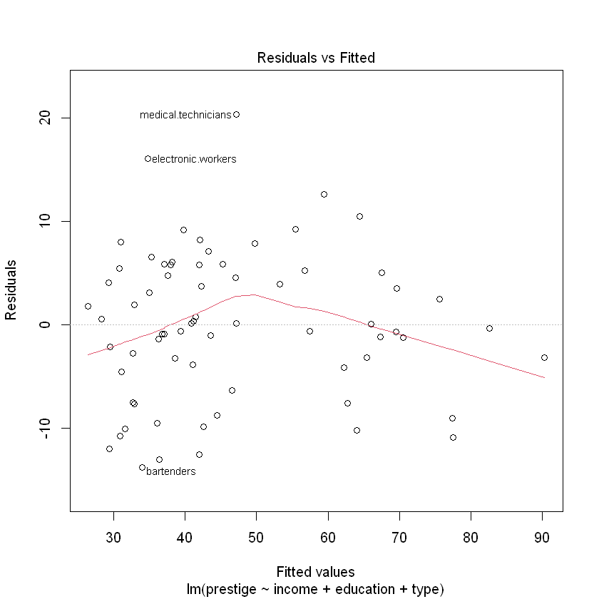
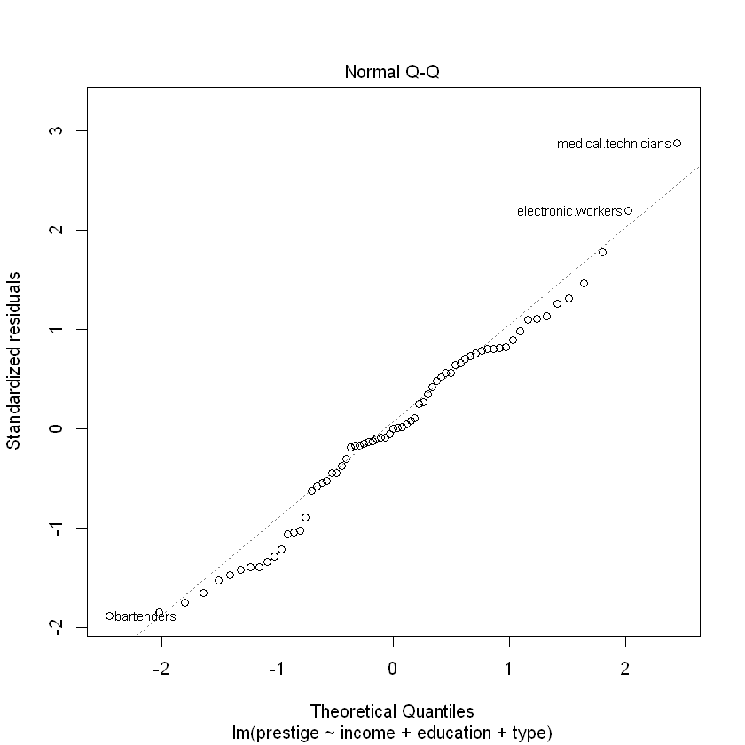
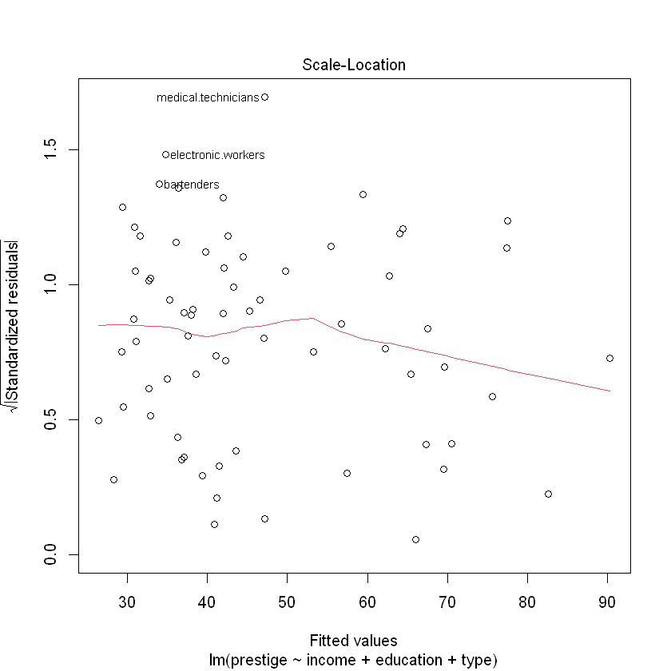
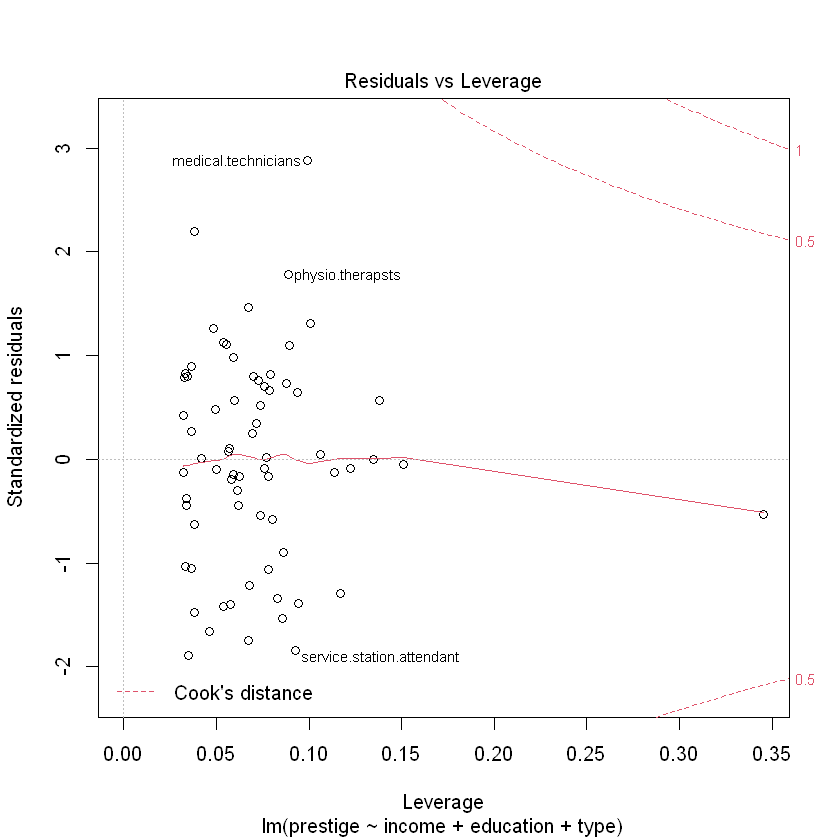
На двох графіках зліва червона лінія показує середнє з відхилень. Якщо варіація похибок зростає разом із збільшенням значень прогнозу - це називається гетероскедастичніть. Прогнозування за таких умов буде давати спотворені результати. Переконаємося у відсутності гетероскедастичності перевіривши p-value:
suppressMessages(library(lmtest))
bptest(lm_mod)
studentized Breusch-Pagan test
data: lm_mod
BP = 9.0675, df = 4, p-value = 0.05943p-value > 0.05, отже ми відхиляємо гіпотезу про те, що гетероскедастичність відсутня (залишки гомоскедастичні - мають однакову дисперсію).
Normal QQ-графік дозволяє перевірити чи похибки розподілені за нормальним законом розподілу. Ідеальний варіант коли вони розміщені чітко по діагональній лінії.
На останньому графіку показується як кожне значення впливає на регресію. У статистиці відстань Кука є загальноприйнятою оцінкою впливу спостереження під час застосування методу найменших квадратів у регресійному аналізі.На практиці, при застосуванні методу найменших квадратів, відстань Кука може використовуватися для наступних цілей: визначити впливові спостереження даних, які потрібно перевірити на валідність; визначення областей простору, у яких непогано було б отримати більше результатів спостереження. Джерело: Detection of Influential Observation in Linear Regression / R. Dennis Cook (https://www.jstor.org/stable/1268249?origin=crossref&seq=1)
Повернемо розмітку для 1-го графіка у вікні RStudio:
par(mfrow=c(1,1))Переглянемо розподіл похибок:
plot(residuals(lm_mod))
abline(a=0,b=0,col='blue')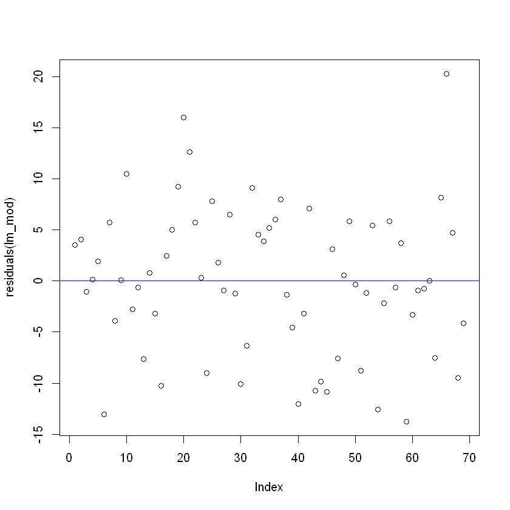
Візуальних закономірностей у похибках немає. Схоже, що вони мають випадковий характер.
2.7 Features selection
Ручний відбір параметрів моделі має ряд недоліків, що пов’язані із якістю моделі та затратами часу на її побудову. Вивчимо окремі алгоритми автоматизованого відбору параметрів у модель.
2.7.1 BestSubsets method
Метод BestSubsets також відомий як all possible regressions. Цей метод відповідно до назв будує всі можливі варіанти моделей на незалежних змінних. Кількість моделей становить \(2^p\), де \(p\) - кількість неазелжних змінних, так для 10 вхідних параметрів буде побудовано \(2^10 =1024\) моделей.
library(leaps)
best_subsets_mod <- regsubsets(prestige ~ income + education + type + women, data = train_data)Розгялнемо відібрані параметри моделі BestSubsets. По осі Y розміщені значення BIC, який обраний як якісний показник регресії, по X - параметри моделі:
plot(best_subsets_mod)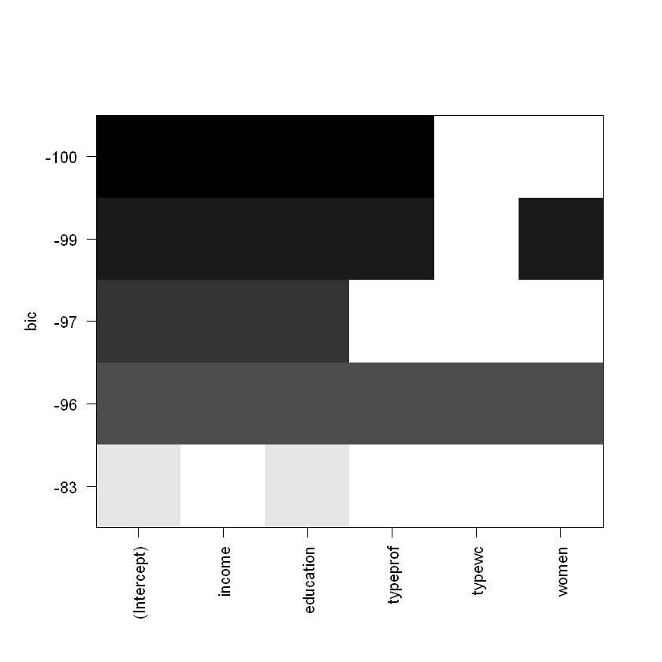
Найтемніша лінія вказує на найкращу модель.
Перебудуємо модель для усіх можливих варіантів комбінацій параметрів:
best_subsets_mod <- regsubsets(prestige ~ income + education + type + women, data = train_data)Також можемо обрати кращу модель окремо за критеріями, наприклад скоригований \(R^2\):
plot(best_subsets_mod, scale = "adjr2")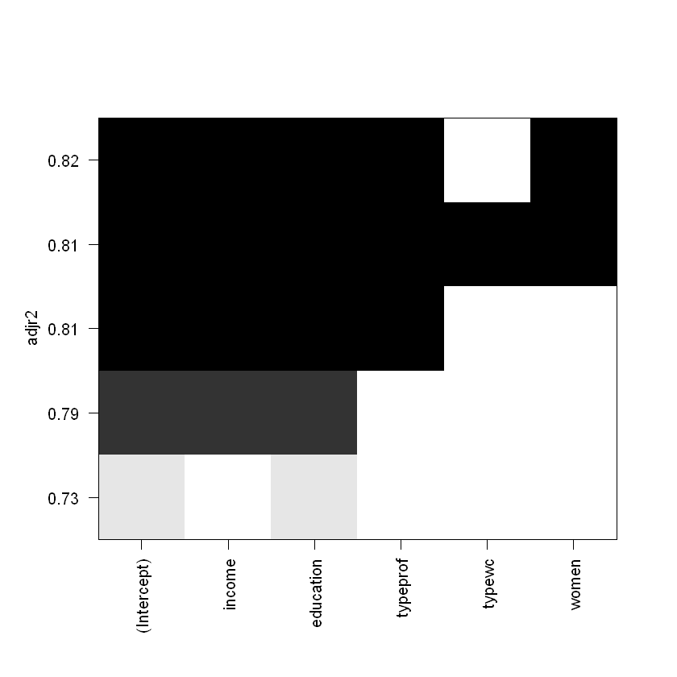
Моделі з найвищим \(R^2\) обираються у такому випадку за цим критерієм, проте не варто забувати про появу мультиколінеарності.
results <- summary(best_subsets_mod)
round(results$adjr2, 4)- 0.729
- 0.7903
- 0.8129
- 0.8151
- 0.8136
model_index <- which.max(results$adjr2)
t <- results$which[model_index, ]
as.data.frame(t)| t | |
|---|---|
| <lgl> | |
| (Intercept) | TRUE |
| income | TRUE |
| education | TRUE |
| typeprof | TRUE |
| typewc | FALSE |
| women | TRUE |
So, the best regression by Adjusted R-Squared is
a0 + a1*income + a2*typeprof + a3*income:typeprof + a4*education:women + a5*income:education:typeprof + a6*income:typeprof:women + a7*income:typewc:women + a8*income:education:typewc:women
2.7.2 Stepwise method
Stepwise - метод, що перебирає можливі варіанти та повертає найкращу модель з найнижчим показником AIC. Перебір моделі може бути з виключенням або з включенням показників у модель - у обох напрямках.
Для початку очистимо дані, що мають пропуски у полі type (також ці дані можна заповнити).
nrow(train_data)
train_data <- train_data[!is.na(train_data$type), ]
nrow(train_data)
71
69
Найпростіша модель з одним параметром (першим по списку) матиме вигляд:
start_mod <- lm(prestige ~ 1, data = train_data)Модель з усіма параметрами:
end_mod <- lm(prestige ~ ., data = train_data)Запустимо алгоритм функцією step():
stepwise_mod <- step(start_mod,
# set minimum and maximum parameters
scope = list(lower = start_mod, upper = end_mod),
# direction of model building
direction = "both", trace = 1, steps = 1000)
# c("both", "backward", "forward") - possible directionsStart: AIC=392.5
prestige ~ 1
Df Sum of Sq RSS AIC
+ education 1 14514.4 5286.9 303.38
+ type 2 13466.4 6334.9 317.86
+ income 1 10623.3 9178.0 341.44
+ census 1 7498.0 12303.3 361.66
<none> 19801.3 392.50
+ women 1 2.1 19799.2 394.49
Step: AIC=303.38
prestige ~ education
Df Sum of Sq RSS AIC
+ income 1 1257.5 4029.4 286.64
+ type 2 904.7 4382.2 294.43
+ census 1 512.7 4774.3 298.35
+ women 1 284.3 5002.6 301.57
<none> 5286.9 303.38
- education 1 14514.4 19801.3 392.50
Step: AIC=286.64
prestige ~ education + income
Df Sum of Sq RSS AIC
+ type 2 492.9 3536.5 281.64
<none> 4029.4 286.64
+ women 1 70.7 3958.8 287.42
+ census 1 47.1 3982.3 287.83
- income 1 1257.5 5286.9 303.38
- education 1 5148.6 9178.0 341.44
Step: AIC=281.64
prestige ~ education + income + type
Df Sum of Sq RSS AIC
+ census 1 144.45 3392.1 280.76
+ women 1 116.49 3420.0 281.33
<none> 3536.5 281.64
- type 2 492.89 4029.4 286.64
- education 1 733.13 4269.7 292.64
- income 1 845.72 4382.2 294.43
Step: AIC=280.76
prestige ~ education + income + type + census
Df Sum of Sq RSS AIC
+ women 1 131.49 3260.6 280.03
<none> 3392.1 280.76
- census 1 144.45 3536.5 281.64
- income 1 470.45 3862.5 287.72
- type 2 590.20 3982.3 287.83
- education 1 877.55 4269.6 294.64
Step: AIC=280.03
prestige ~ education + income + type + census + women
Df Sum of Sq RSS AIC
<none> 3260.6 280.03
- women 1 131.49 3392.1 280.76
- census 1 159.46 3420.0 281.33
- type 2 628.53 3889.1 288.20
- income 1 596.05 3856.6 289.62
- education 1 748.59 4009.2 292.29# lets see the summary
summary(stepwise_mod)
Call:
lm(formula = prestige ~ education + income + type + census +
women, data = train_data)
Residuals:
Min 1Q Median 3Q Max
-12.0817 -4.9121 0.0985 5.8624 19.7564
Coefficients:
Estimate Std. Error t value Pr(>|t|)
(Intercept) -1.136e+01 1.058e+01 -1.073 0.287294
education 3.328e+00 8.821e-01 3.773 0.000363 ***
income 1.307e-03 3.882e-04 3.367 0.001311 **
typeprof 1.241e+01 5.318e+00 2.333 0.022930 *
typewc 7.615e-01 3.732e+00 0.204 0.839003
census 1.356e-03 7.788e-04 1.741 0.086595 .
women 6.212e-02 3.928e-02 1.581 0.118911
---
Signif. codes: 0 '***' 0.001 '**' 0.01 '*' 0.05 '.' 0.1 ' ' 1
Residual standard error: 7.252 on 62 degrees of freedom
Multiple R-squared: 0.8353, Adjusted R-squared: 0.8194
F-statistic: 52.42 on 6 and 62 DF, p-value: < 2.2e-16З підсумків моделі видно, що детермінація зросла, тобто модель стала описувати явище ще краще.